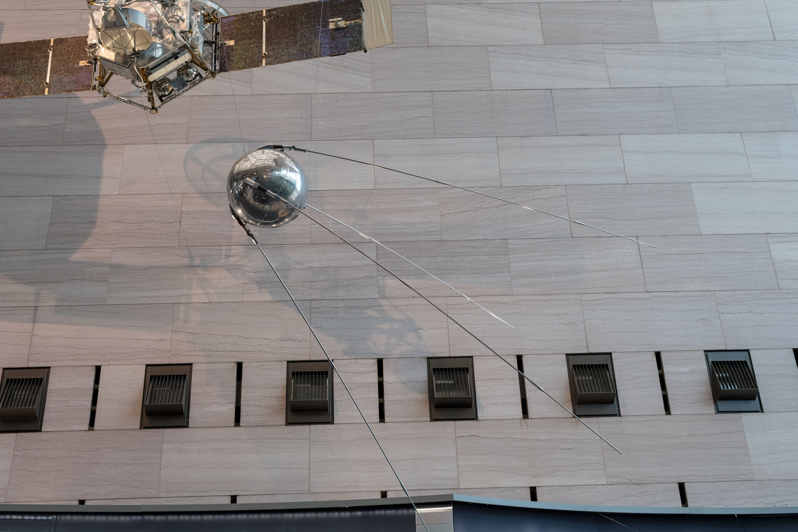

An Earth satellite is any object — natural or artificial — that orbits Earth under the influence of gravity. Earth has one natural satellite, the Moon. Artificial satellites are human-made spacecraft placed intentionally into orbit for scientific, communications, navigation, weather, or military purposes.
The concept of an artificial satellite was first outlined theoretically by Isaac Newton in Philosophiae Naturalis Principia Mathematica (1687), in a thought experiment in which a cannonball fired horizontally from a mountaintop at sufficient velocity would travel all the way around Earth before falling — describing what is now recognised as orbital motion.

Mys 721tx / CC BY-SA 3.0
{kind=link}
The Natural Satellite: The Moon
Earth's only natural satellite is the Moon, orbiting at a mean distance of 384,399 km. The Moon completes one orbit of Earth every 27.3 days (sidereal period), with a synodic period of 29.5 days. Its diameter of approximately 3,500 km makes it more than one-quarter of Earth's diameter and the fifth-largest natural satellite in the Solar System. The Moon most likely formed from debris ejected when a Mars-sized body (often referred to as Theia) collided with the young Earth roughly 4.5 billion years ago — the giant impact hypothesis.
History of Artificial Satellites
The first artificial Earth satellite was Sputnik 1, launched by the Soviet Union on 4 October 1957. It was approximately 58 cm in diameter, weighed 83.6 kg, and orbited Earth every 96 minutes on an elliptical path with a perigee of 230 km and an apogee of 940 km. Its sole payload was a low-power radio transmitter broadcasting a repeating beep audible to radio operators worldwide. Sputnik 1 re-entered Earth's atmosphere on 4 January 1958, having completed approximately 1,440 orbits. The launch shocked the Western world and catalysed the creation of NASA and the modern era of space exploration. The United States responded with Explorer 1, launched on 31 January 1958. As of June 2025, approximately 12,952 satellites were in Earth orbit, driven largely by commercial mega-constellations such as SpaceX's Starlink.
Orbit Types
Low Earth Orbit (LEO), at altitudes of roughly 160–2,000 km, is the most densely populated orbital regime, with an orbital period of 88–127 minutes. It hosts the majority of Earth-observation satellites, weather satellites, the International Space Station (at ~400 km), and commercial mega-constellations. Medium Earth Orbit (MEO), at 2,000–35,500 km, is used primarily for navigation. GPS satellites orbit at approximately 20,200 km with a period of 12 hours; Russia's GLONASS, Europe's Galileo, and China's BeiDou operate at similar altitudes. Geostationary Orbit (GEO), at 35,786 km above the equator, gives an orbital period that matches Earth's rotation, so a satellite in circular equatorial orbit at this altitude appears stationary over a fixed point on Earth's surface. The concept was first proposed by Arthur C. Clarke in 1945. Three GEO satellites spaced 120° apart can provide near-global telecommunications and weather coverage. Sun-synchronous orbit (SSO), typically at 600–800 km and with a slightly retrograde inclination of ~96–98°, precesses at the same rate that Earth revolves around the Sun, ensuring consistent solar illumination for Earth-observation satellites.
Applications
Satellites serve a broad range of purposes: relaying communications signals across continents and oceans; monitoring weather and climate from both polar and geostationary positions; enabling satellite navigation for transportation, agriculture, and emergency services; observing land use, ocean colour, sea-surface temperature, and polar ice extent from LEO; and hosting space telescopes and heliophysics instruments above the atmosphere. The International Space Station serves as a platform for microgravity research. Military satellites have provided surveillance and early warning capabilities since the earliest days of the space age.
Space Debris and Kessler Syndrome
As of 2024, Earth's orbital environment contains approximately 54,000 objects larger than 10 cm, around 1.2 million debris objects between 1 cm and 10 cm, and an estimated 140 million objects smaller than 1 cm. Only objects larger than ~10 cm are routinely tracked by ground-based surveillance networks. Even a 1 cm fragment travelling at orbital speeds of 7–8 km/s in LEO carries enough kinetic energy to disable a spacecraft. In 2009, the operational Iridium 33 communications satellite collided with the defunct Russian Cosmos 2251 at ~789 km altitude, generating thousands of fragments. In 2007, China destroyed its Fengyun-1C weather satellite in an anti-satellite test, creating more than 3,000 tracked fragments — the largest single debris-generating event in history.
In 1978, NASA scientists Donald J. Kessler and Burton G. Cour-Palais described a cascading scenario — subsequently termed Kessler syndrome — in which, if the density of objects in LEO exceeds a critical threshold, each collision generates more debris that triggers further collisions in a self-sustaining chain reaction, potentially rendering certain altitudes permanently unusable. As of 2025, debris-modelling indicates that at approximately 550 km altitude the density of tracked debris is now comparable to that of active satellites. Mitigation measures include designing satellites to de-orbit within 25 years of end of life and developing active debris-removal missions.